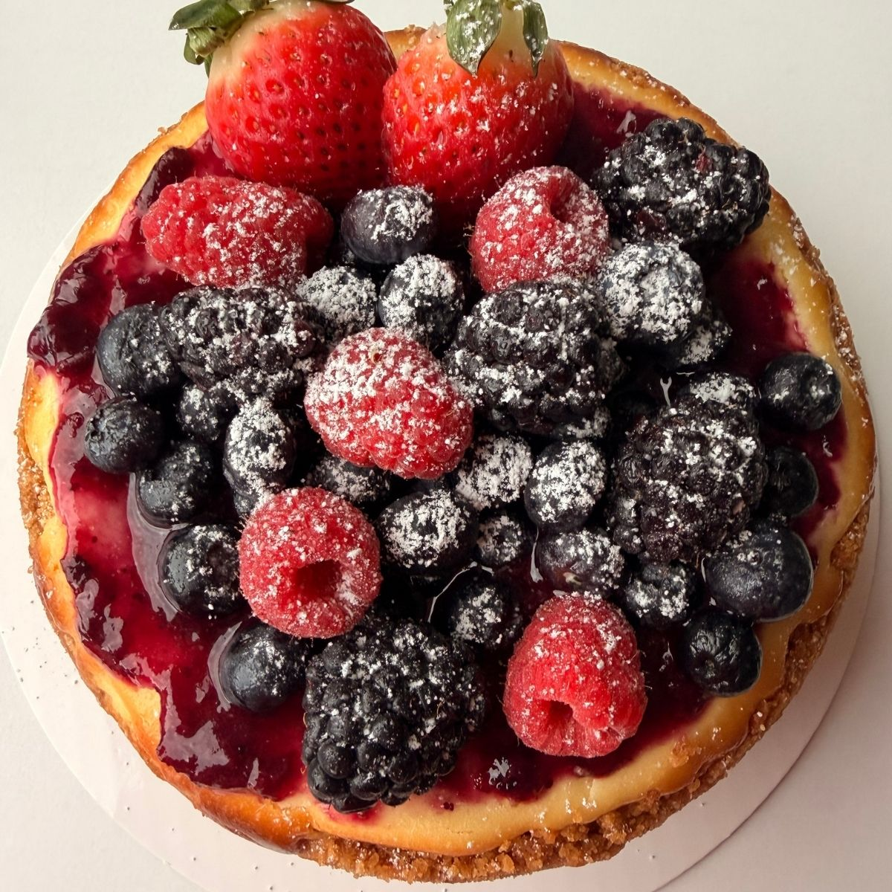

Home
New York Cheesecake

New York Cheesecake topped with berries jam and fresh berries.
New York Cheesecake is a rich and creamy classic with a smooth,
dense filling and a rustic digestive biscuit crust that extends up
the sides. Baked tall and generous, it has the perfect balance of
buttery crunch and silky cheesecake in every slice.
Ingredients
For a 8 in cake.
For the base.
- 180 gr Digestive Cookies
- 90 gr Melted Butter
- A pinch of Salt
For the mix.
- 600 gr Cream Cheese
- 130 gr Granulated Sugar
- 150 gr Eggs
- 120 ml Heavy Cream
- 15 ml Lemon Juice
- 1 tsp Vanilla Extract
- 1/4 tsp Salt
Steps
- Crush the cookies, leaving small visible pieces (this is what gives the base its rustic look).
- Mix the crushed cookies with the melted butter and salt, and spread the mixture into the pan, forming a raised rim 2 inches high.
- Bake for 8 to 10 minutes at 338 degrees. Let cool completely before adding the filling.
- For the filling, mix the cream cheese and sugar in a mixer using the paddle attachment.
- Add the eggs one at a time.
- Add the cream, lemon, vanilla, and salt.
- Pour the mixture over the cold base and remove air bubbles by tapping.
- Bake at 320 degrees for 50 to 60 minutes, or until the center still jiggles slightly when moved. CAUTION! Do not overbake.
- Let it cool in the oven with the door ajar for one hour to avoid a sudden temperature change. Finish cooling at room temperature and place in the refrigerator once it is cold. This prevents cracks from forming.